Вопрос, вынесенный в название, в последнее время, наверное, задают чаще других вопросов про использование GPS-навигаторов. Ответ рассчитан на использование наиболее распространённых в нашем клубе навигаторов Garmin. Естественно, залить карты можно только в те модели, которые это поддерживают.
Какие карты можно залить в прибор?
Сначала разберёмся, как вообще можно хранить карты в цифровом виде.
Есть два принципиально разных способа хранения электронных карт - растровый и векторный.
В растровом виде карта хранится как изображение. Принципиально можно использовать те же форматы, что используют для хранения фотографий - PNG, JPG, GIF, TIFF и др. Существуют специальные программы, которые позволяют работать с такими файлами именно как с картами, а не как с абстрактными изображениями. Растровые карты всегда требуют ручной или полуавтоматической привязки, то есть указания в том или ином виде соответствия между координатами точки на листе и координатами соответствующей ей точки на местности. Информация о привязке может быть включена в файл или храниться отдельно, но она при использовании таких программ есть всегда.
В векторном виде карта хранится как совокупность географических объектов. Например, некой башне может соответствовать запись в файле, говорящая, что существует объект типа "башня", координаты которой такие-то, и высота её такая-то. Векторные карты позволяют реализовать многие технологии, крайне трудно реализуемые для растровых карт, в частности:
* если такая возможность заложена в карту разработчиком.
В приборы Garmin можно залить не всякие карты, а только векторные и только хранящиеся в определённом формате. Файлы с этими картами имеют расширение IMG.
Чем заливать
Широко распространены две программы, предназначенные для заливания карт в прибор. Каждая программа имеет ряд преимуществ и недостатков.
MapSource - фирменная программа, или, точнее, система, позволяющая систематизировать векторные карты, просматривать их и заливать в прибор выбранный набор карт.
SendMap - это независимая бесплатная программа, заливающая карты в прибор без возможности просмотра.
Для карт горных районов, которые, чаще всего, не подготовлены для использования с MapSource, обычно используют SendMap.
Img2gps – по сути является графической оболочкой для SendMap.
Где взять программы?
MapSource имеется на диске, поставляемом с прибором или скачивается по адресу http://www8.garmin.com/support/download_details.jsp?id=209.
Бесплатный Sendmap берётся по адресу http://www.cgpsmapper.com/ в разделе Download. Качайте именно бесплатную версию -- вам хватит её возможностей с запасом! Обязательно используйте свежую версию SendMap (как минимум rev 3.3) -- т.к. старые версии обладали некоторыми неприятными особенностями, вплоть до временного (до перепрошивки) выведения прибора из строя.
Программа GPSMapEdit, которая вам наверняка тоже пригодится для просмотра карт, берется по адресу http://www.geopainting.com/ru/index.html, она условно-бесплатна (возможностей незарегистрированной версии вам также хватит с запасом).
Gps преемники Garmin
С точки зрения процесса загрузки карт GPS приемники Garmin можно две категории:
(Список моделей неполный, приведен для примера)
Все приборы, поддерживающие внешние карты памяти могут быть использованы в качестве кардридера и карты в них могут быть залиты при помощи обычного кардридера (что предпочтительней, поскольку обмен данными с GPS довольно медленный)
Загрузка карт в приборы 1-го типа (без карт памяти и внутренней памятью, недоступной как диск)
Особенности
Независимо от применяемой программы, есть ряд особенностей в процессе заливки.
При заливке карт в устройство все карты, залитые в него до этого, стираются. То есть нельзя добавить карту в прибор в дополнение к уже залитым, набор карт должен заливаться за один раз. Объясняется это особенностями системы хранения карт внутри прибора.
Также, независимо от применяемой программы, необходимо обеспечить связь прибора с компьютером. Для приборов с COM-портом достаточно подключить прибор к компьютеру кабелем, для приборов с USB должен быть установлен драйвер. Про установку драйвера см. приложение в конце статьи.
Процесс заливки карт SendMap-ом по пунктам.
Скачиваем программы. Установки они не требуют, поэтому просто распаковываем архивы в какой-нибудь каталог.
Запускаем GPSMapEdit. Открываем карту или карты, если интересно посмотреть их до начала процесса заливки. Закрываем карту, не сохраняя её. Определяемся, какие листы нам нужны.
Подключаем прибор, запускаем SendMap.
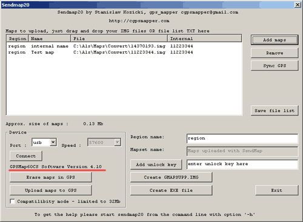
Если вы знаете, к какому порту подключен прибор, выберите его из списка Port, если не знаете, оставьте Auto.
Нажимаем кнопку Connect. Если всё в порядке, то ниже неё появится тип прибора и версия софта на нём (подчёркнуто на рисунке красной линией). Если не всё в порядке, появится окошко с ошибкой, а под кнопкой возникнет текст "No GPS Found".
Если это произошло, делаем то, что написано в окошке: проверяем, что прибор включен и подключён кабелем к компьютеру, а если прибор подключается по USB, проверяем, что у вас всё в порядке с драйверами (см. ниже).
Нажимаем кнопку "AddMaps", выбираем карты, которые нам нужны. После нажатия на Ok карты появляются в списке.
Нажимаем кнопку "Upload maps to GPS". Ещё раз: карты, которые до этого были залиты в прибор, при этом будут удалены! Появляется окошко "Sending maps to gps:" Ждём.
Когда процесс завершится, находим в приборе залитые карты и проверяем, что всё получилось нормально и мы залили именно те листы, которые нужны.
Решение проблем с драйверами
Как проверить, что драйвера стоят нормально?
Подключите прибор. Кликните на "Мой компьютер" правой кнопкой, выберите "свойства"-"оборудование"-"менеджер устройств".
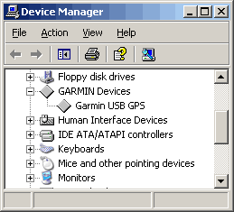
Откройте группу устройств "Garmin Devices", кликнув на плюсик рядом с ней. Если вы видите в этой группе устройство "Garmin USB GPS" и оно выглядит как на рисунке, то есть рядом с ним нет восклицательного знака или прочих нездоровых признаков, у вас всё в порядке. Если группы "Garmin Devices" или устройства "Garmin USB GPS" нет вообще, то, скорее всего, прибор не подключён или у вас проблема с usb-портом. Попробуйте переключить прибор в другой порт. Если имеет место восклицательный знак, у вас неправильно установлен или вообще не установлен драйвер. При наличии диска от прибора, установите его в CD-ROM и, кликнув на строчке с восклицательным знаком правой кнопкой, выберите "обновить драйвер". Если диска нет - скачивайте драйвер с сайта. Тут тоже есть тонкость. Автоматический установщик, который скачивается, и который, по идее, должен установить за вас драйвера, лично у меня ни разу не сделал этого корректно. Если вас постигла та же беда, и вы считаете себя продвинутым пользователем - запустите установку, пройдите её почти до конца, но Finish не нажимайте. После этого поиском файла grmnusb.inf найдите на диске в каталоге "Documents and Settings" подкаталог, куда инсталлятор распаковал свои файлы. Сохраните все файлы из этого подкаталога и обновите драйвер неисправного устройства, указав путь к ним. Это должно помочь.
Загрузка карт в приборы 2-го типа (c картой SD и внутренней памятью доступной как внешний диск)
Особенности
Прежде чем предпринимать какие-либо действия желательно сделать резервную копию содержимого прибора и SD карты!
Файлы карт Garmin
Файлы для загрузки в Garmin имеют вид 12345678.img- это отдельные листы карт, но если просто скопировать эти файлы в прибор, он их не увидит. Для того чтобы GPS смог прочитать несколько карт их необходимо объединить в «контейнер» и поместить его во внутреннюю память прибора или на карту памяти в директорию Garmin. Контейнер, как и простая карта, имеет вид файла с расширением img, однако его внутренняя структура может отличаться и имя должно быть строго определенным.
Современные Гармины понимают несколько имен контейнеров с картами
В некоторых источниках говорится что возможны имена gmapsup2.img, gmapsup3.img… мне не удалось заставить работать файлы с такими именами, также как и запустить с карты памяти что-либо, кроме gmapsupp.img. Видимо это зависит от модели GPS и версии прошивки.
Самый простой способ «запаковать» карту в контейнер -- просто переименовать 12345678.img в gmapsupp.img и поместить директорию \Garmin прибора, но этот способ работает только для одного файла.
Сформировать полноценный контейнер можно при помощи программ MapSource, SendMap и GMapTool.
Процесс заливки карт SendMap-ом по пунктам
Скачиваем программы. Установки они не требуют, поэтому просто распаковываем архивы в какой-нибудь каталог.
Запускаем GPSMapEdit. Открываем карту или карты, если интересно посмотреть их до начала процесса заливки. Закрываем карту, не сохраняя её. Определяемся, какие листы нам нужны.
Запускаем SendMap.
Нажимаем кнопку "AddMaps", выбираем карты, которые нам нужны. После нажатия на Ok карты появляются в списке.
Нажимаем кнопку "Create GMAPSUPP.IMG". Появляется окошко "Creating GMAPSUPP.IMG" Ждём.
Подключаем навигатор к компьютеру или вставляем SD-карту в кардридер и просто копируем полученный gmapsupp.img в директорию drive:\Garmin, навигатора или карты памяти, при необходимости переименовав.
Загрузка карт MapSource.
Тут все просто: Инструментом «карты» выбираем нужные листы,
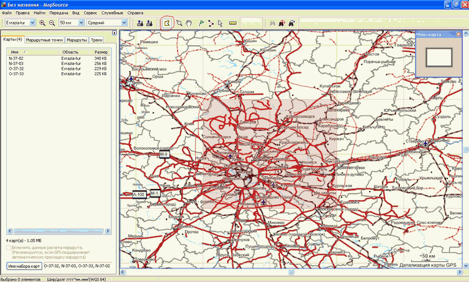
Затем Передача- отправить на устройство
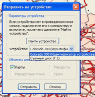
При заливке карт в устройство все карты, залитые в него ранее, стираются!
Все просто, а вот загрузить карты в MapSource удастся, только если есть специально для этого подготовленный набор, иначе придется вручную прописывать в реестре несколько параметров. Впрочем, подготовить такой набор можно при помощи программы GMapTool.
GMapTool
Чтобы подготовить сборку для MapSourse понадобятся GMapTool и cGPSmapper, скачать можно здесь http://anpo.republika.pl/gps.html.
Для примера возьмем набор Евразия, сконвертированый из карт Ингит 2002 года, встречается в сети как в виде контейнера gmapsupp.img, так и в виде архива с набором карт.
Открываем файл карты
|
Если есть готовый контейнер. |
Если есть отдельные файлы карт. |
|
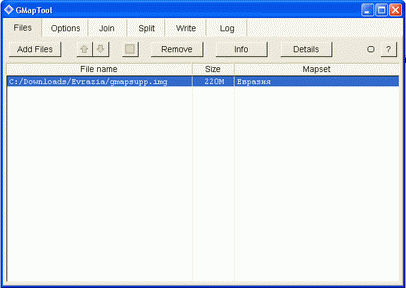 |
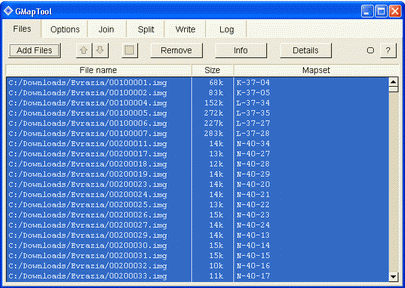 |
|
Переключаемся на вкладку Split | |
|
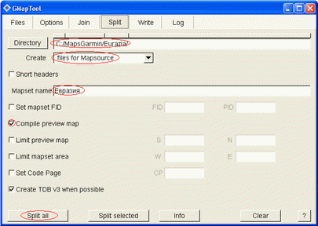 |
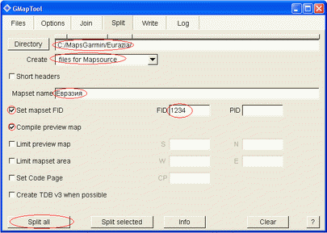 |
Directory - путь к директории, где будут лежать файлы для MapSourse
Mapset name – это название будет показано в MapSourse
Set mapset FID (Famili ID)– можно ввести любое число 1-4 знаков. Важно чтобы введенный FID не совпадал с FID, уже установленных карт!
FID - это число размером в 2 байта.
У отдельных файлов IMG FID нет! FID есть только у наборов карт.
При подготовке сборки для MapSourse из контейнера gmapsupp.img FID можно не менять, но необходимо проверить что он не совпадает с FID, уже установленных карт. Посмотреть FID можно нажав «info».

Нажимаем «Split all», ждем некоторое время (зависит от размера сборки) и открываем директорию C:\MapsGarmin\Eurasia, там появились файлы: install.bat- при запуске он пропишет в реестр параметры, необходимые, чтобы загрузить в MapSourse и uninstall.bat, который их уберет из реестра.
Q: Сделал все как написано, но при запуске MapSourse появляется окно:
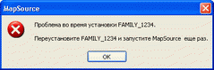
A: где-то все же ошибся. Запускаем редактор реестра Windows (Пуск- выполнить- regedit) и идем в ветку HKEY_LOCAL_MACHINE\SOFTWARE\Garmin\Mapsource\Families, находим там раздел \FAMILY_1234 и удаляем его. В принципе тоже самое делает uninstall.bat, можно для начала попробовать запустить его. Теперь внимательно повторяем все заново.
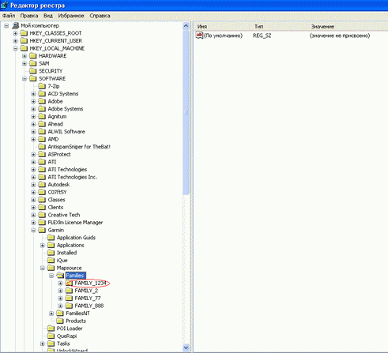
Если не уверены в своих знаниях не меняйте ничего в других разделах реестра, это может привести к нарушению работоспособности Windows!
Учтитите также, что GMapTool может работать неправильно, если попытаться поворить неудачное действие с записью файлов в тот же каталог, который был использован в неудачой попытке. Надежный способ избежать этого – удалить вручную все файлы, созданные в результате неудачного действия.
Создание контейнера gmapsupp.img в GMapTool
Открываем файлы карт и переходим на вкладку «Join»
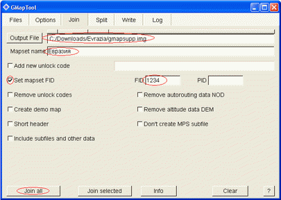
Output File- путь и имя контейнера (gmapsupp.img, gmapprom.img…)
Mapset name – это название будет показано в навигаторе, в меню выбор карты
Set mapset FID – можно ввести любое число 1-4 знаков. Важно чтоб введенный FID не совпадал с FID, других загруженных в навигатор карт!
Нажимаем кнопку «Join all»
Объединение нескольких контейнеров gmapsupp.img в один
Может понадобиться в случае необходимости загрузить в навигатор большее количество карт, чем альтернативных имен контейнеров.
Открываем файлы карт
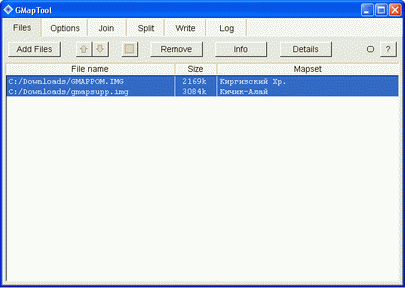
переходим на вкладку «Join»
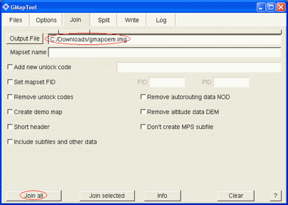
Поля Mapset name и Set mapset FID не заполняем, пусть эти параметры для каждой карты останутся свои, чтобы их можно было различать и включать по отдельности.
Прочие вопросы
Что такое залоченная карта?
Существует фирменная Гарминовская технология защиты карт от копирования. Идея заключается в том, что для использования карты в приборе необходим, который формируется на основе FID, PID карты и ID прибора или карты памяти. Unlock Code хранится в файле gmapsupp.unl (gmapprom. unl, gmapoem. unl), или может быть зашит в контейнер gmapsupp.img. То есть, даже имея файл с картой, вы сможете использовать его только на том приборе, для которого у вас есть ключ к этой карте. При переносе карты на другой прибор она не будет там работать. Или (если Unlock Code сформирован на основе ID карты памяти) на любом приборе, но только с этой карты памяти.
Схема покупки таких карт следующая: вы определяете ID своего прибора (его можно посмотреть через MapSource или через меню прибора) и отправляете его продавцу карты. Продавец даёт вам ключ к своей карте для вашего прибора. Сам файл карты может быть независимо от ключа передан на CD или выложен на сайт (так как без ключа он бесполезен).
По понятным причинам это все, что можно рассказать по этому вопросу, добавлю только что встречающийся а интернете генератор Unlock Code часто бывает заражен вирусами, будьте аккуратны.
Можно ли выкачать карту из прибора?
Для приборов, у которых память видна как внешний диск, нет никаких проблем – скопируйте файл с контейнером и, если надо, разберите его GMapTool-ом (см. выше).
Для приборов первого типа все сложнее. Штатными средствами нельзя выкачать карту из такого прибора. Однако есть средства, осуществляющие это при помощи недокументированных функций. Например, GPS daemon, который можно скачать вот тут http://www.geocities.com/swan_gps/gpsdaemon.html. Не прибегайте к выкачиванию карт без необходимости, эта операция потенциально опасна, хотя и не известно случаев реальной гибели прибора. Знайте, что вы действуете на свой страх и риск. Естественно, залоченная карта останется таковой и после вытаскивания её из прибора.
Что такое TYP-файл?
TYP-файл позволяет изменять внешний вид карты путём переопределения некоторых условных знаков и создания новых. Некоторые карты не отображаются корректно без этого файла. Обычно особенности использования этого файла упомянуты в описании карты. TYP-файл надо залить в прибор точно так же, как и файл с картой. Для приборов, у которых память видна как внешний диск, его нужно положить внутрь контейнера.
У меня есть карта в формате JPG. Как её преобразовать в IMG, чтобы залить в прибор?
Преобразовать -- никак. Не существует простого способа автоматически перевести растровый формат в векторный (этот процесс назвается векторизацией). Программы-векторизаторы, которые предназначены для решения этой задачи, существуют, но время, которое уходит на приведение результата их работы в сколь-либо удовлетворительный вид сопоставимо со временем, которое уходит на перерисовывание карты заново вручную. Поэтому векторизация -- это в основном ручной процесс. Для горных районов за разумное время можно на основании топографической карты создать хребтовку, которую можно будет залить в прибор. Как это сделать читайте здесь http://www.westra.ru/articles/navigation/creatingmaps.html.
Впрочем, новые приборы (Colorado, Oregon, Dakota) умеют загружать растровые карты. В следующей версии этого руководства будет описано, как это сделать, а пока можно прочитать про заливку карт в Вестровском форуме вот тут http://www.westra.ru/forum/viewtopic.php?t=6648 (требуется регистрация)